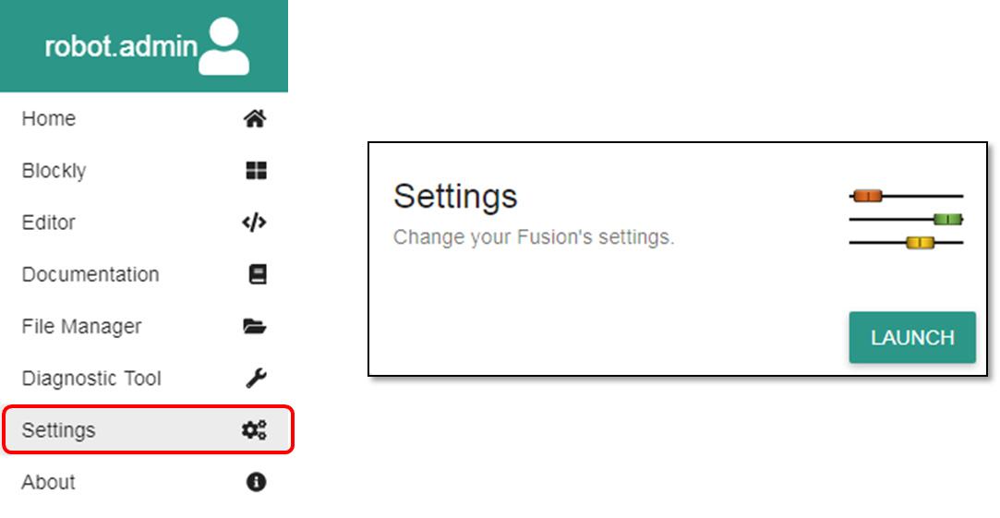

Autonomous Mode
Autonomous mode allows an administrator to select a program on the Fusion to run automatically when the Fusion powers on.
A user must be logged in as an administrator to access the appropriate settings.
Location:
Open the Fusion settings from the hamburger menu on the left or the settings box on the home page. 
Navigate to the AUTONOMOUS tab option
Toggle Autonomous Mode
Autonmous mode can be toggled on and off by enabling the switch on the upper right hand corner.
Setting a Program
Select a user account
Select a program type (at the time of writing this documentation, only editor programs are supported)
Select a program
Press set


Resetting to Default Mode
Autonomous mode can be reset to it's factory settings by pressing the default button.
Questions?
Contact Boxlight Robotics at support@BoxlightRobotics.com with a detailed description of the steps you have taken and observations you have made.
Email Subject: Fusion Autonomous Mode